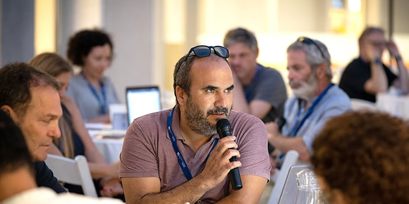
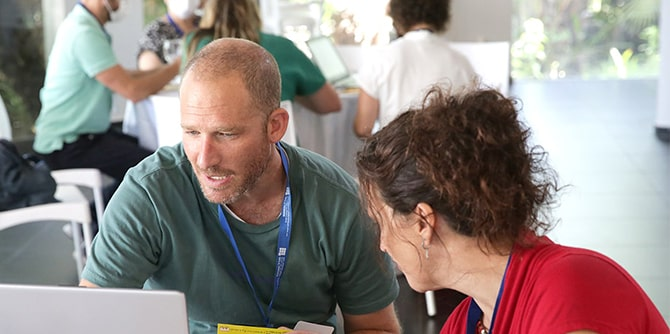

Tell us about the new incarnation of the Mandel Graduate Unit.
The establishment of the original Mandel Graduate Unit was a groundbreaking step in the educational-social arena in Israel. It may be difficult for us to imagine today, but when the Mandel Foundation–Israel originally opened its Graduate Unit, there were no alumni associations in Israel that provided graduates with opportunities for continuing professional development. This step was indicative not only of a commitment to innovation, but also of the great importance that the Mandel Foundation always attached to continuing support for graduates after they completed their leadership programs.
There are many differences between the new Mandel Graduate Unit and its previous incarnation. The most prominent difference is that today anyone who has completed a Mandel leadership training program receives services from the Graduate Unit, whereas in the past, the Unit focused solely on graduates of the Foundation’s flagship program, the Mandel School for Educational Leadership. The Foundation made this strategic change as an expression of its desire to broaden and deepen the impact of its graduates on Israeli society. That is, the change is rooted in the idea that leadership programs are an important and necessary first step, but are not sufficient on their own.
This decision, of course, affects our approach to our work. The mandate of the current Graduate Unit is to continue the professional and intellectual development of graduates, but unlike in the past, the orientation is toward the field. It is important to us to support graduates in the practical changes they are leading in the real world, in all kinds of ways. Thus, alongside professional development, we are also involved in implementation support.
 A graduate speaks at a roundtable event (Photo: Simanim)
This is the source of another difference between the new Graduate Unit and its predecessor: our investment in community-building. We believe that the main strength of our graduates lies in their interconnectedness, in their ability to join forces and lead change together. For this reason, it is very important to us to create many opportunities for meaningful encounters between graduates, since these encounters have the potential to create fundamental, systemic, and sustainable change.
Our ambition to create a vibrant and active community is also the reason why every Mandel Foundation–Israel program or unit now has its own graduate community facilitator. The facilitators, as well as the faculty members of the programs, know their graduates personally, and are aware of their needs and of potential collaborations between them. No less important, they understand the specific field of action in which the graduates operate (for example, informal education for Bedouin society in the Negev) and are aware of the challenges they face. The work of the facilitators enables us to see the overall picture and to create relevant responses.
 Graduates in the lobby of the Mandel Foundation building in Jerusalem (Photo: Simanim)
Graduates in the lobby of the Mandel Foundation building in Jerusalem (Photo: Simanim)
How does the Graduate Unit learn about the needs of the graduates?
We are constantly learning about our graduates and their needs. At the outset, we conducted in-depth interviews with over 150 graduates, who were quite diverse. We learned a lot from them about how the Foundation is viewed, what their professional needs are, and what they would like to do together with other members of the graduate community. Around a year ago, we held several roundtable events that were attended by some 170 graduates. We presented to them our initial thoughts and ideas, as we worked to define the Unit’s approach. That’s where we really began to see the potential of connections between graduates.
I think that the most significant learning about our graduates happens informally, in the course of our regular work. The new Unit began working with graduates in January 2022. Since then, we have met with over 1,000 graduates in various learning processes and activities that we hosted. We are getting to know the people behind the names, speaking with them, and listening to them in our day-to-day interactions with them. Here, too, the community facilitators play a key role in giving the graduates a voice. Recently, we also opened a Facebook group for graduates. This too is an important channel for listening to our graduates and learning about them.
Graduates on the patio of the Mandel Foundation headquarters (Photo: Simanim)
How is it possible to create an effective network for so many graduates from such diverse programs?
That’s a good question. Because our community is very large and very heterogeneous, we have to be smart about this. We are learning and improving our approach and methods all the time. Currently, we have several strategies. We recently launched our “professional network” – an internal database that graduates can use to find one another. It already has information about almost 1,200 graduates, and graduates can search by name, areas of interest, fields of expertise, and other parameters.
We also have diversity in our activities. Except for cases in which there is professional value to having a common background, our preference is to create heterogeneous groups of graduates from different programs and different backgrounds. In the activities that we ran so far this year, the enormous value of bringing together people who do not know one another but share similar experiences as Mandel graduates was evident. The participants quickly overcame their differences and discovered that they speak a common language. In this sense, networking happens naturally.
In the coming months, we will also be launching an online magazine called “The Mandelist,” which will provide a platform where our graduates can showcase their initiatives. This will provide more opportunities for members of the graduate community to get to know each other.
A discussion between graduates in the Negev (Photo: Mandel Foundation-Israel)
What kinds of support and activities do you offer?
The Unit’s leadership development approach has four main components:
- Professionalization in leading change
- Continuing intellectual development
- Implementation support
- Community-building
We offer different activities and processes that further the goals of these components in different ways. For example, in the area of intellectual development, we held several one-day seminars over the last year that addressed issues of society and education, such as privacy in the public sphere or the issue of hatred. There have also been a number of processes led by Mandel faculty members, who each focused on their area of expertise. In the area of professionalization in leading change, we offered two types of activities: processes that focused on in-depth learning and training in theories of leading change (such as adaptive leadership and resistance to change); as well as processes that focused on developing specific skills (such as data-based management, or public speaking).
In the area of implementation support, we have taken a big step forward in formulating our methods and activities. We provide a framework and support to action groups of graduates who are passionate about leading change in a specific area. Since the new unit started operating, graduates formed several action groups in order to address issues that are high on the public agenda, such as reducing violence in Arab society or improving employment conditions for teaching staff. The groups are the purest expression of our leadership development approach, as graduates come together independently to lead change in areas that are sometimes part of their everyday work and are sometimes issues that they simply feel compelled to address.
Another type of implementation support can be found in the accelerator for educational-social entrepreneurship that we established this year, which encourages graduates to develop their ideas into real-world action. This is a very intensive program. Those who devote themselves to it receive a package of professional support that gets their initiative to the stage where it is ready to be launched.
Graduates at a roundtable event (Photo: Simanim)
Which graduate activity do you think was particularly important or successful?
I think the most important activities have been activities that were initiated by graduates themselves, not necessarily activities initiated by the Unit. There were several such activities this year, and I consider them to be our most important contribution. For example, a group of Haredi graduates came together to think about making the field of mental health more accessible in the ultra-Orthodox community. Another important example was a group of Arab graduates in Baqa al-Gharbiyye who came together at the initiative of one of our graduates to study the government’s five-year plan for Arab society in depth and to explore ways of making optimal use of the resources included in it.
We are very much at the beginning of our journey and are still taking our first steps. It is no exaggeration to say that we are learning something new every day. There have been times when we have changed or redefined planned activities, or we decided that they were not fully developed and went back to the drawing board. We still have much to learn about our graduates, and in particular about the best ways to work with them.
Looking toward the future, within two or three years we hope to reach a stage in which a significant portion of our activity is driven by “bottom-up” processes, alongside the opportunities for professional and personal development that we will continue to offer. That is, we hope that our work will be driven by initiatives of graduates who are dissatisfied with things as they are, and see the Mandel Graduate Unit as a laboratory and professional space where they can develop, explore, and lead changes in society, together with partners from within the community. This is the part that I find most exciting – seeing where this process will take us.
 Graduates at the Mandel Foundation headquarters in Jerusalem (Photo: Simanim)
Graduates at the Mandel Foundation headquarters in Jerusalem (Photo: Simanim)
-
-
A graduate speaks at a roundtable event (Photo: Simanim) -
Graduates in the lobby of the Mandel Foundation building in Jerusalem (Photo: Simanim) -
Graduates on the patio of the Mandel Foundation headquarters (Photo: Simanim) -
A discussion between graduates in the Negev (Photo: Mandel Foundation-Israel) -
Graduates at a roundtable event (Photo: Simanim) -
Graduates at the Mandel Foundation headquarters in Jerusalem (Photo: Simanim)
{kind=link}
{kind=link}
{kind=link}
{kind=link}
{kind=link}